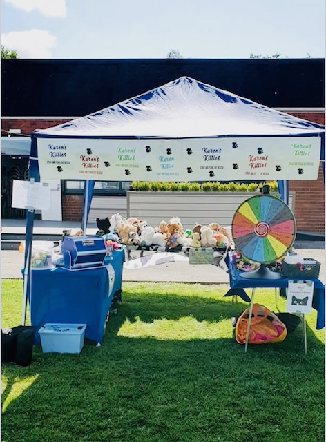

Fundraising Events
Events and fundraising are our only source of income and it is essential for our small rescue to continue to survive and help these poor cats and kittens.
We have an online fundraising group ‘ Cats of M33 Fundraising for Karen’s Kitties’ where we do auctions, scratch cards, raffles and sales of handcrafted goods and home made organic reduced sugar jams, when in season.
We go out into the community and attend festivals, Easter, Summer and Christmas fairs, Halloween events and sponsored walks. We also go to shopping centres and local public houses, where we are warmly welcomed.

Fundraising stall